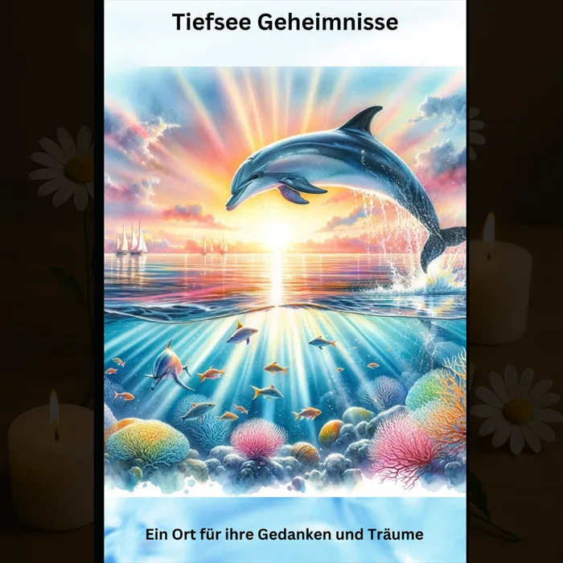

Ein Notizbuch für Gedanken, Pläne und kleine große Ideen
Es gibt Orte, an denen wird alles leiser. Tief unten im Meer zum Beispiel, dort, wo das Licht nur noch sanft durch das Wasser fällt und die Welt über einem ganz weit weg wirkt. Keine Hektik, kein lauter Alltag – nur Ruhe, Tiefe und dieses Gefühl, dass dort unten noch so vieles verborgen liegt.
Ein bisschen genau so fühlt es sich an, wenn man ein neues Notizbuch aufschlägt.
Eine leere Seite kann manchmal wie ein kleiner Anfang wirken. Noch ist nichts geschrieben, noch ist alles offen. Und genau darin liegt etwas Besonderes.
🌊 Ein Notizbuch mit Tiefsee-Stimmung
Tiefsee-Geheimnisse: Ein Ort für Ihre Gedanken und Träume ist ein Notizbuch, das schon durch sein Cover eine ganz eigene Atmosphäre mitbringt. Die Unterwasserwelt wirkt ruhig, geheimnisvoll und fast ein wenig verträumt. Es ist kein lautes Design, sondern eher eines, das zum Hinschauen einlädt.
Man bekommt sofort dieses Gefühl von Tiefe, Fantasie und Stille. Als würde man kurz abtauchen und den Alltag für einen Moment über der Wasseroberfläche lassen.
Und genau dafür kann ein Notizbuch da sein: um Gedanken festzuhalten, bevor sie wieder verschwinden.
✍️ Platz für Gedanken, Träume und kleine Geheimnisse
Im Inneren warten 200 linierte Seiten, die genug Raum für alles bieten, was man aufschreiben möchte. Ob es nun große Pläne sind oder nur ein kleiner Gedanke zwischendurch – hier darf alles seinen Platz finden.
Du kannst es nutzen für:
- persönliche Gedanken
- Träume und Erinnerungen
- Ideen für Geschichten oder Projekte
- kleine Notizen aus dem Alltag
- Skizzen, Listen oder spontane Einfälle
- Dinge, die nur für dich bestimmt sind
Gerade diese Mischung macht ein Notizbuch für mich immer so schön. Es muss nicht nur für eine Sache da sein. Manchmal wird es ein Tagebuch, manchmal ein Ideensammler und manchmal einfach ein stiller Begleiter für alles, was gerade im Kopf herumschwimmt.
🐚 Dezente Gestaltung für ein schönes Schreibgefühl
Was mir an solchen Notizbüchern besonders gefällt, ist, wenn sie nicht zu überladen sind. Tiefsee-Geheimnisse bringt zwar dieses besondere Unterwassergefühl mit, bleibt innen aber trotzdem angenehm ruhig.
Die zarten Motive auf den Innenseiten begleiten das Schreiben eher leise im Hintergrund. Sie nehmen einem nicht den Platz weg, sondern schaffen nur diese kleine besondere Stimmung, die das Notizbuch von einem ganz schlichten Heft unterscheidet.
So kann man sich gut auf das konzentrieren, was wirklich wichtig ist: die eigenen Worte.
📖 Für den Alltag, für Ideen oder als Traumtagebuch
Ein Notizbuch muss für mich praktisch sein, aber eben auch schön. Denn wenn man es gern in die Hand nimmt, schreibt man auch eher hinein. Tiefsee-Geheimnisse kann dabei ganz unterschiedlich genutzt werden.
Vielleicht als Tagebuch für ruhige Abende. Vielleicht als Begleiter für unterwegs. Vielleicht auch als Traumtagebuch, wenn man morgens noch schnell festhalten möchte, was einem aus der Nacht geblieben ist.
Aber auch für kreative Ideen passt es sehr gut. Gerade wenn man Geschichten schreibt, Blogideen sammelt oder einfach gern kleine Gedanken festhält, ist so ein Notizbuch immer etwas Wertvolles.
🎁 Auch als Geschenk eine schöne Idee
Ich finde, Notizbücher sind immer eine schöne Geschenkidee, weil sie nicht nur praktisch sind, sondern auch etwas Persönliches haben. Man schenkt damit nicht einfach Papier, sondern einen kleinen Raum für Gedanken.
Gerade Tiefsee-Geheimnisse passt gut für Menschen, die das Meer mögen, gerne schreiben oder einfach einen besonderen Platz für ihre Ideen suchen.
Ob zum Geburtstag, zu Weihnachten, zum Schulabschluss, zum Studienbeginn oder einfach als kleine Aufmerksamkeit zwischendurch – dieses Notizbuch bringt etwas Ruhiges und Besonderes mit.
Es sagt auf seine eigene Weise: Deine Gedanken dürfen bleiben.
🌌 Mein Eindruck
Tiefsee-Geheimnisse: Ein Ort für Ihre Gedanken und Träume ist ein Notizbuch für alle, die sich von ruhigen, geheimnisvollen Designs inspirieren lassen. Es verbindet die Weite des Meeres mit dem Gefühl, dass jede Seite ein neuer Anfang sein kann.
Für mich ist es kein Notizbuch, das einfach nur herumliegt. Es ist eher eines, das man gerne aufschlägt, weil es direkt eine kleine Stimmung mitbringt. Ruhig, tief, ein bisschen magisch – und perfekt für alles, was man nicht verlieren möchte.
📘 Jetzt dein Tiefsee-Geheimnis entdecken
Hol dir „Tiefsee-Geheimnisse – Ein Ort für Ihre Gedanken und Träume“ – und schenke deinen Gedanken einen ruhigen, geheimnisvollen Raum, in dem Ideen entstehen, Erinnerungen bewahrt werden und kleine Gedanken ihren Platz finden dürfen.
Ein Notizbuch für alle, die gerne schreiben, träumen, planen oder einfach ihre Gedanken festhalten möchten.
✍️ Ideen aufschreiben und bewahrenNivora Graufeder ist das Pseudonym hinter der Zwergenbibliothek – einem kleinen, feinen Verlagsimprint für Bücher, die mehr sind als nur Papier.